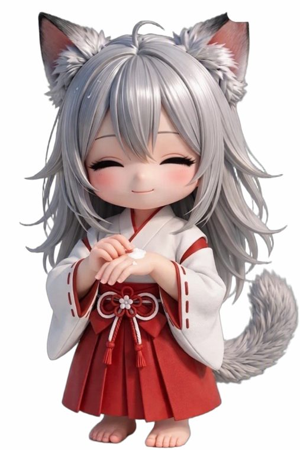
いつものケア
水を飲む、姿勢を伸ばす、手を洗う。いつでもできる小さなこと。プラスのみで、悪かった日も減りません。
水を飲む、姿勢を伸ばす、手を洗う。いつでもできる小さなこと。プラスのみで、悪かった日も減りません。
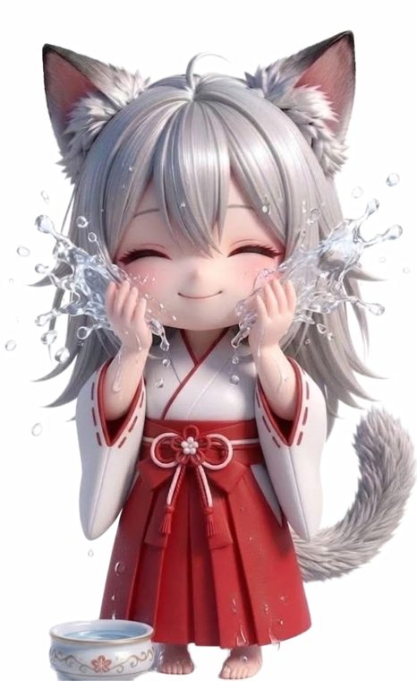
朝と夜のケア
朝の洗顔と日焼け止め、夜のスキンケア。毎日の約束です。できない日も、何も起きません。
朝の洗顔と日焼け止め、夜のスキンケア。毎日の約束です。できない日も、何も起きません。
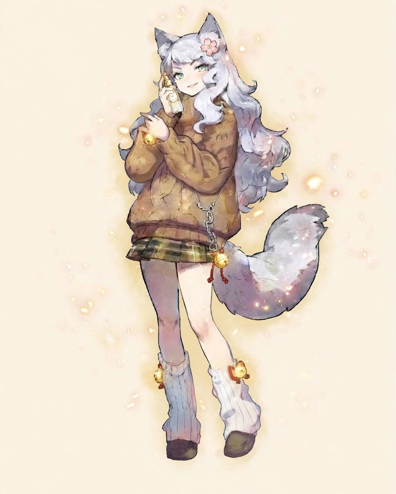
今日、スキンケアを1つ終えたら、今夜ねこが冒険に出ます。帰ってきたねこは、物語と小さな発見を持ってきます。数字に急かされる育成は、ここにはありません。
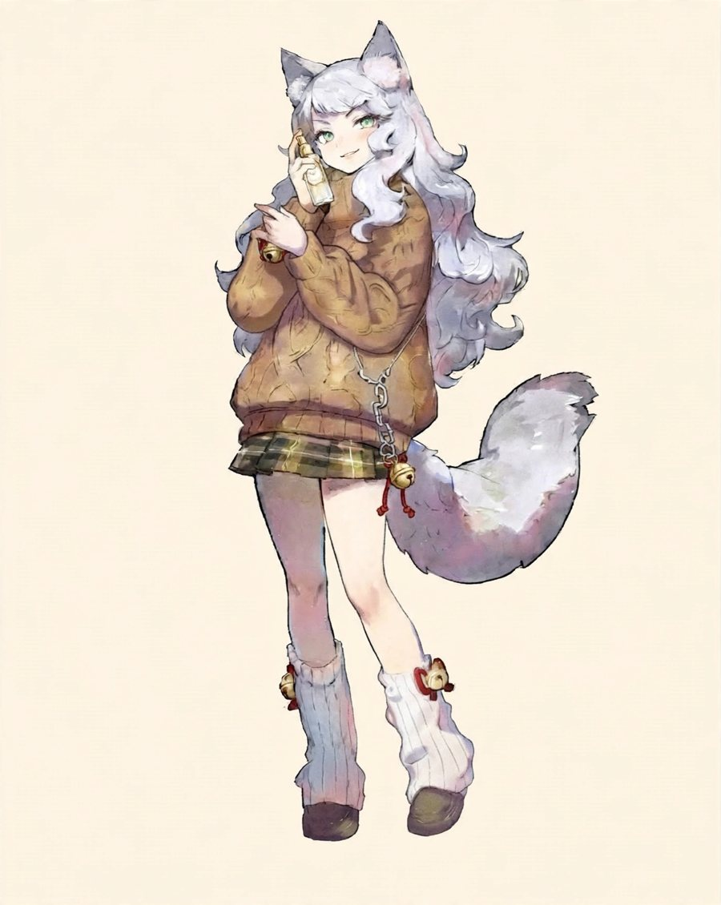
最初は「ほのかな光」。小さな姿のねこが、あなたの部屋に住み始めます。
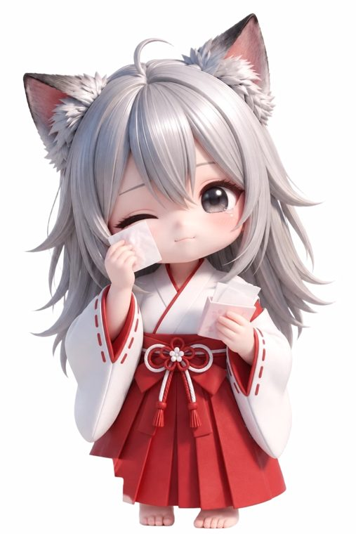
水を飲む、シートで拭く、服を選ぶ。小さなケアが、ねこの冒険のエネルギーになります。
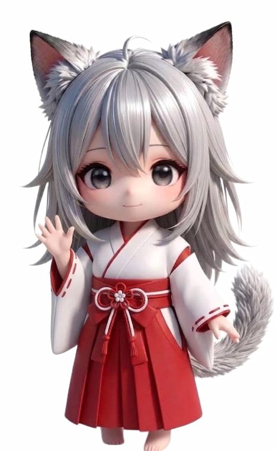
冒険のあと、ねこは出来事を話してくれます。ときどき、新しい髪飾りや部屋のものを発見します。
することは全部「ケア」。置き場が分かれているから、今日できるものだけ選べます。どの置き場にも、減点はありません。


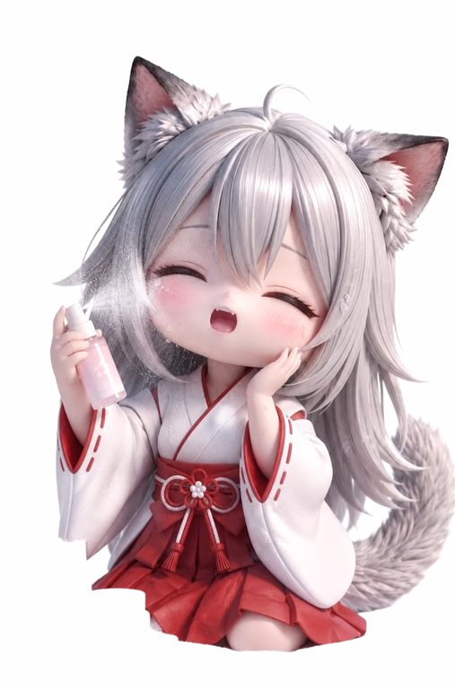
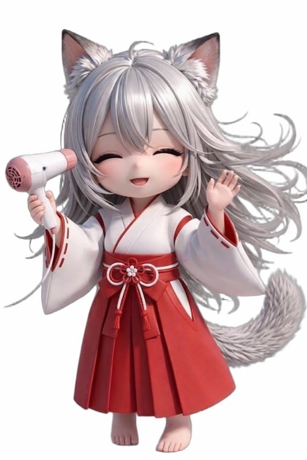
報酬はポイントではなく、出来事です。だから「貯めて終わり」にならず、次に開く理由が物語の続きになります。
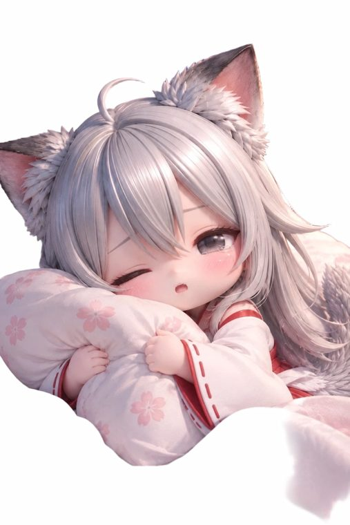
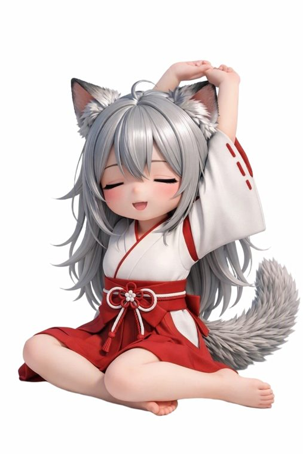
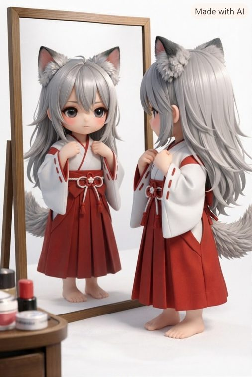
冒険の発見は消えません。髪飾りが増え、服が増え、部屋が少しずつ「ねことあなたの場所」になっていきます。
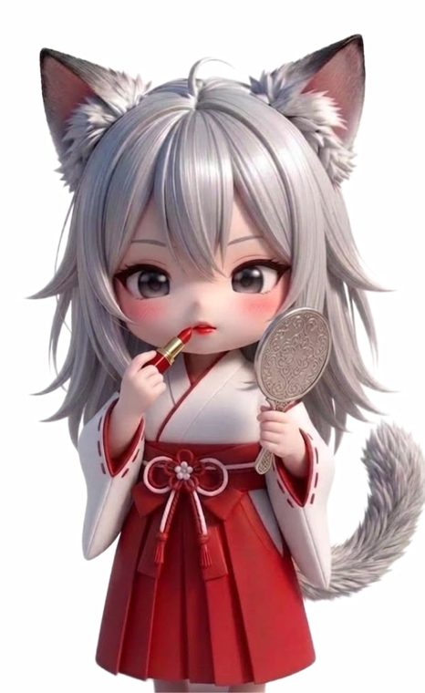
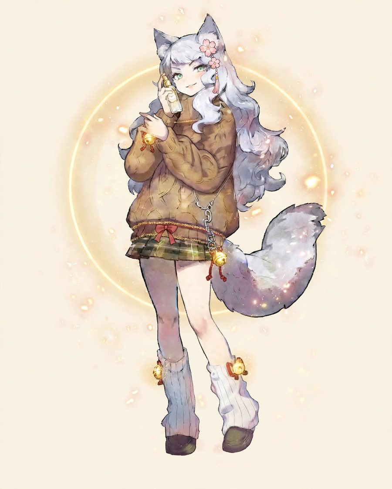
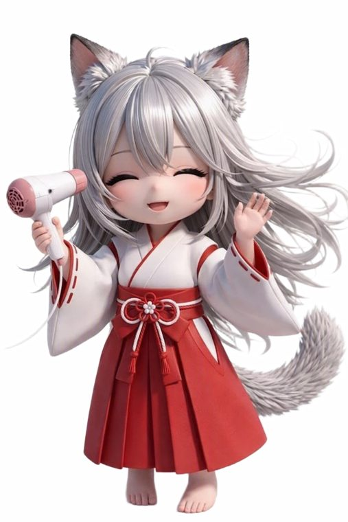
発見コレクション ― 貯まっていく先は、この棚です。集めるのは買い物ではなく、冒険の発見だけ。
数字は評価ではなく、目安の演出です。比べる相手も、期限もありません。
これはカードの見本です。あなたの週のカードは、体験ページで実際に残ります。見せるかどうかは、あなた次第です。
下のボタンから、そのまま触れます。登録も、アプリのダウンロードもいりません。
無料で触れます。育成の記録は、あなたの端末の中にだけ残ります。
何も減りません。ねこは静かに待っているだけです。翌日、物語の続きから再開できます。
ケアは普段のことです。水を飲む、顔を拭く、服を選ぶ。その「ついで」が冒険の燃料になります。
ありません。育ちは、ねこの姿と物語でだけ分かります。比べる相手も、期限もありません。
この場所に、レベルも順位も期限もありません。育ちは姿と物語でだけ分かります。それが、長く続く形だと考えています。
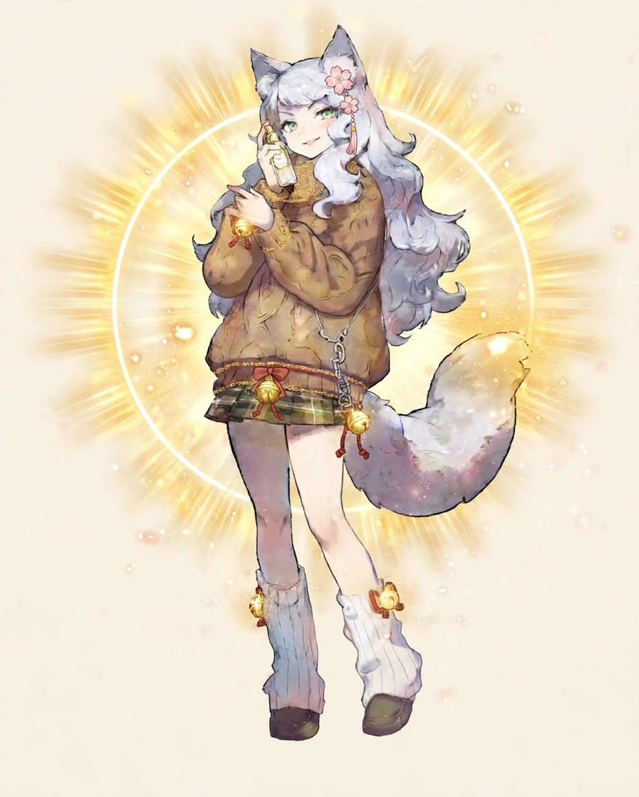
ねこは、あなたのケアを待っています。最初の物語は、今夜届きます。
ねこに会いに行く登録なしで、そのまま触れます